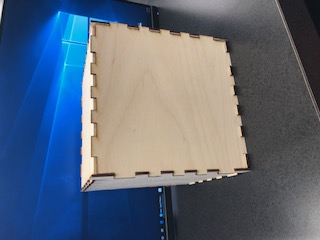
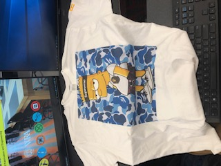
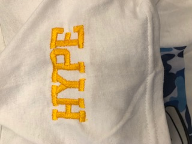
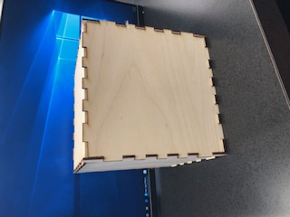
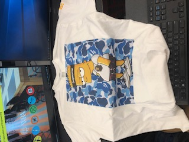
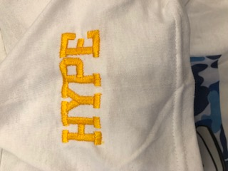

  
For my final project, I made a hype beast t-shirt. I first downloaded a picture of hype beast Bart Simpson as a JPG. I then uploaded it to gtx and centered it. I then saved this as a ar file to the USB. I pressed print and set up the printer I wanted to use. I then pressed my shirt and then placed it into the t-shirt printer. I plugged into the USB and uploaded it through print data load. When the printer was done printing, I pressed my shirt again. Then I took my shirt and embroidered it. I did this by setting up the dimensions on the embroidery machine. I then chose my font and design and then printed. I chose yellow satring and then I printed. Then I made a box for my shirt. I did this by grabbing this design off the class cite and then I uploaded it to correll draw. I changed the dimensions of the boxes, so it was big enough to fit a shirt in. I then made my box a hairline, so that it would cut through the thing and not just engrave it. I then put my shirt inside my box and presented the four processes I used were. 1. T-shirt printer. 2. embroidery. 3. cad. 4. laser printer. I really enjoyed making my final project!



Box File
Index